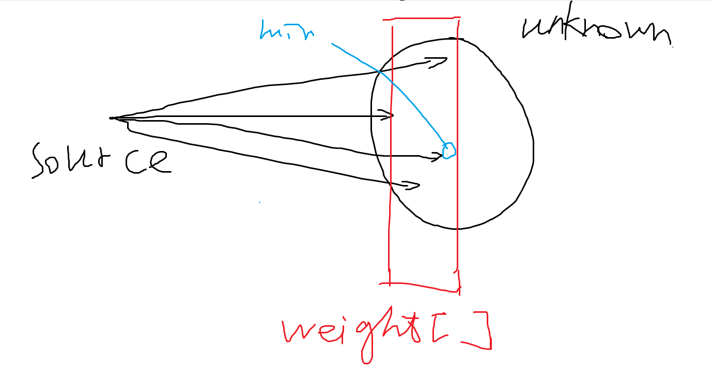
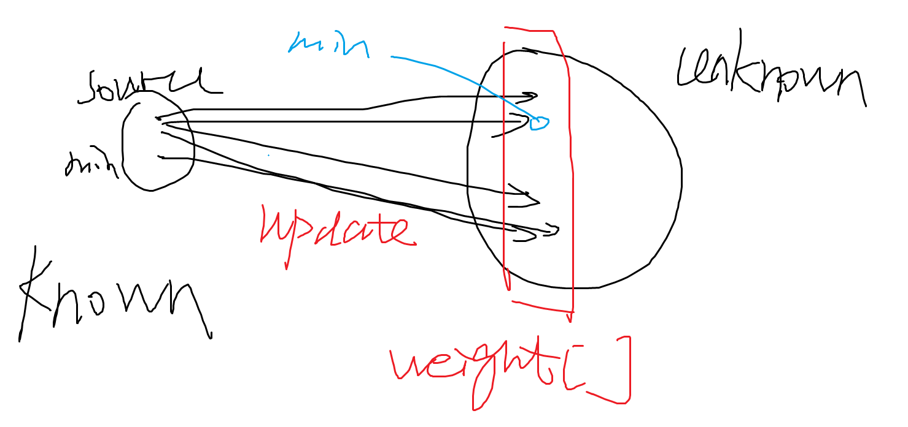
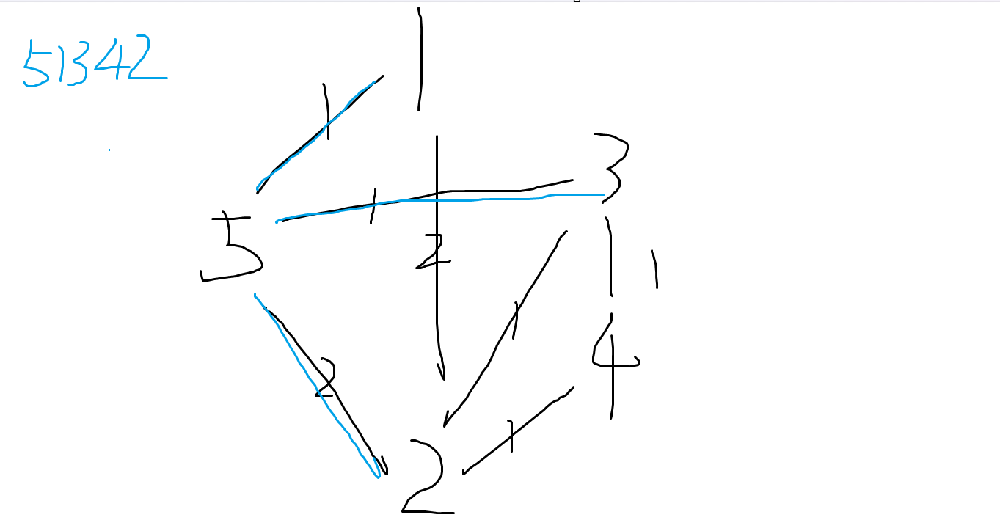
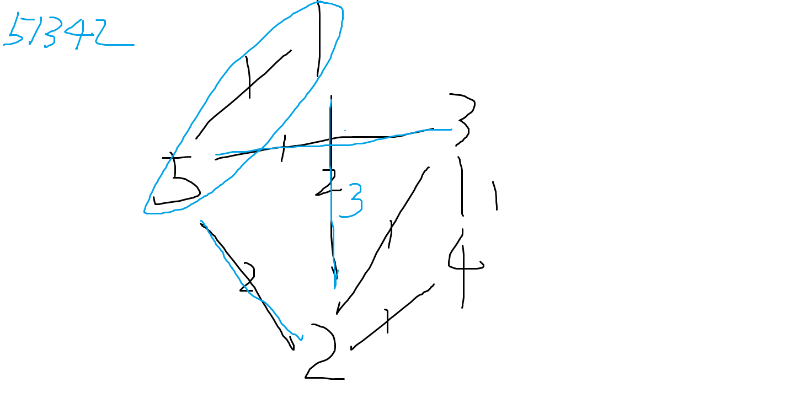
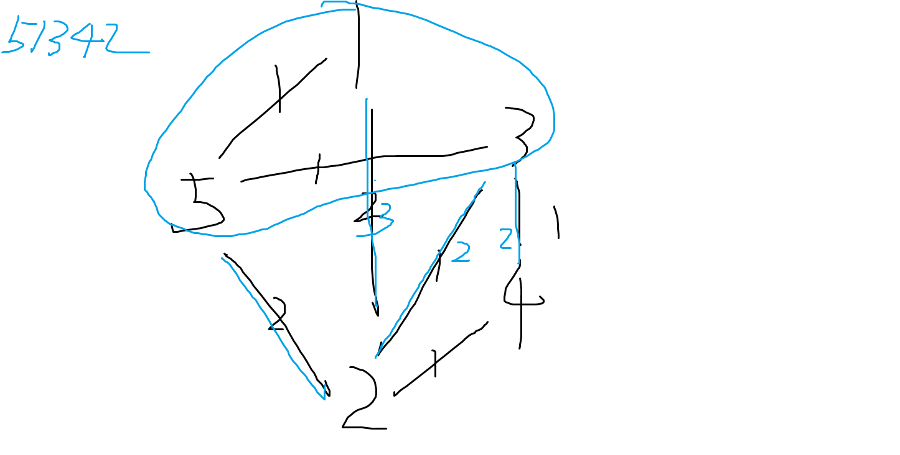
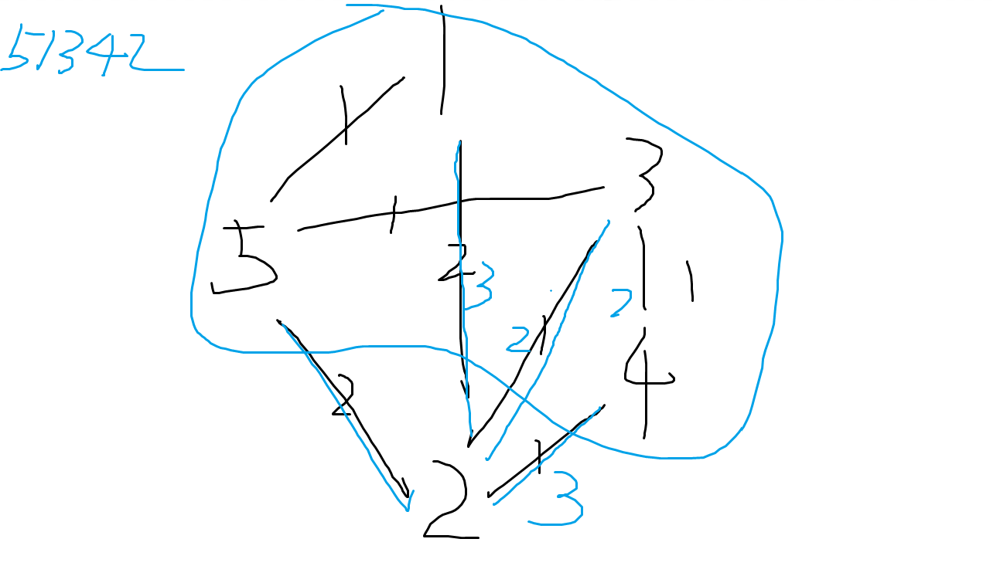

Report of Project 3 Dijkstra Sequence
杨亿酬 3230105697 2024-5-12
Chapter 1 Introduction¶
The shortest path problem is a classic computational problem that deals with finding the shortest paths between vertices in a graph. It has wide applications in areas such as transportation, logistics, communications, and network routing.
Dijkstra’s algorithm is a popular greedy algorithm for finding the shortest path between nodes in a graph. It was conceived by computer scientist Edsger W. Dijkstra in 1956. The algorithm operates by building a set of nodes that have minimum distance from the source,which is efficient for sparse graphs.
Our job is find whether a given sequence is a dijkstra sequence,namely,whether the sequence covers all the vertices of a graph and is a shortest path from the source.If is does,we call it a dijkstra sequence.
To do this,we first input a graph by inputting the number of vertices and edges and the vertices connected by the edges,as well as the weight of the edges.Then we input several sequences,and we output yes if the given sequence is a dijkstra sequence,while output no otherwise.
Chapter 2 Algorithm Specification¶
- Dijkstra Algorithm
Initialization: The function starts by initializing an array weight that will store the shortest distance from the already visited vertices to the remaining vertices in the graph.
First Vertex Processing: It then processes the first vertex in the sequence, updating the weight array for all vertices adjacent to this first vertex.
Sequence Processing: The function enters a loop that iterates over the rest of the vertices in the sequence. For each vertex, it checks if the shortest distance to the already visited vertices is equal to the shortest distance to the next vertex in the sequence. If not, it returns false, indicating that the sequence is not a valid Dijkstra sequence.
Vertex Inclusion: If the shortest distances match, the function includes the vertex in the set of already visited vertices and updates the weight array accordingly for all vertices adjacent to this newly included vertex.
Result: If the function successfully processes all vertices in the sequence without returning false, it returns true at the end, indicating that the sequence is a valid Dijkstra sequence.
The following is a diagram analysis of the algorithm:
Initialization:

Add the 'min' to Known and update the edges and weight[]:

Repeat until an the vertices are Known.
The following is an example used for explaining how to update the edges: Initialization:

Add '1' to Known and update the edges:

Add '3' to Known and update the edges:

Add '4' to Known and update the edges:

Add '2' to Known and end the algorithm.
The following is the pseudocode of function IsDijkSeq:
| Text Only | |
|---|---|
1 2 3 4 5 6 7 8 9 10 11 12 13 14 15 16 17 18 19 20 21 22 23 24 25 26 27 28 29 30 31 32 33 34 35 36 37 38 39 40 41 42 43 44 45 46 47 48 49 50 51 52 53 54 55 56 57 58 59 60 61 62 63 64 65 66 67 68 69 70 71 72 73 74 | |
Data structure analysis:
- Graph(Weighted undirected connected graph)
The data structure:Graph shares the following properties:
1.Vertices and Edges: A graph consists of a set of vertices (or nodes) and a set of edges. Each edge connects a pair of vertices. In a weighted graph, each edge has an associated weight, which could represent quantities like distance, cost, etc.
2.Undirected: In an undirected graph, an edge from vertex A to vertex B is identical to an edge from vertex B to vertex A. That is, the graph is bidirectional.
3.Connected: A connected graph is a graph where there is a path from any point to any other point in the graph. This means all vertices are reachable.
4.No Loops or Multiple Edges: In a simple graph, there are no loops (edges connected at both ends to the same vertex) and no multiple edges (more than one edge connecting the same pair of vertices).
By using a Graph data structure, we can indeed access the vertices through the edges. This allows us to model many real-world problems, such as routing, scheduling, and social networking, among others.
Chapter 3 Testing Results¶
| input | output | corresponding purpose | |
|---|---|---|---|
| 1 | 5 7 1 2 2 1 5 1 2 3 1 2 4 1 2 5 2 3 5 1 3 4 1 4 5 1 3 4 2 5 3 1 2 4 2 3 4 5 1 3 2 1 5 4 |
Yes Yes Yes No |
simple sample 1(given by pta) |
| 2 | 6 8 1 2 3 1 3 2 2 4 5 2 5 2 3 4 1 3 6 4 4 5 2 5 6 3 3 1 2 5 4 6 3 1 3 4 2 5 6 1 3 6 4 2 5 |
No Yes No |
simple sample 2(gengerated by myself) |
| 3 | 10 15 1 2 1 1 3 2 2 4 1 2 5 2 3 6 1 3 7 2 4 8 1 4 9 2 5 10 1 6 8 2 7 9 1 8 10 2 9 10 1 5 6 2 7 8 1 3 1 2 4 8 10 5 3 6 7 9 1 3 6 8 4 2 5 10 7 9 1 3 7 9 10 5 2 4 8 6 |
No No No |
a bit larger sample |
| 4 | 3 3 1 2 1 2 3 1 1 3 2 2 1 2 3 1 3 2 |
Yes No |
small sample |
| 5 | see in 5.txt | No No No No No |
very large sample max Nv,max Ne,max Weight |
Chapter 4: Analysis and Comments¶
Let V and E represents the number of vertices and edges in the graph respectively.
- Time complexity:
The time complexity of this function mainly depends on nested loops. The outer loop traverses each vertex in the graph, so its complexity is O(V), where V is the number of vertices. The inner loop1,in the worst case,traverses the vertices and records the weight between the Known graph and the other vertices,so it's time complexity is O(V).The inner loop2, in the worst case, may need to traverse all the edges in the graph, so its complexity is O(E), where E is the number of edges. Therefore, the overall time complexity of the function is O(V2+V*E).
- Space complexity:
The space complexity of this function depends on the spatial areas applied for storing the information of the vertices and the edges.Therefore,it is obvious that the space complexity of the algorithm is O(V+E).
As for why Dijkstra’s algorithm is more effective on sparse graphs, the main reason is that the time complexity of Dijkstra’s algorithm is related to the number of edges in the graph. In a sparse graph, the number of edges is much less than the square of the number of vertices, so the running time of Dijkstra’s algorithm on a sparse graph will be shorter than on a dense graph. In addition, Dijkstra’s algorithm is a greedy algorithm, which always chooses the shortest edge at each step, which allows it to find the shortest path more quickly on a sparse graph.
Declaration¶
I hereby declare that all the work done in this project titled "Dijkstra Sequence" is of my independent effort.